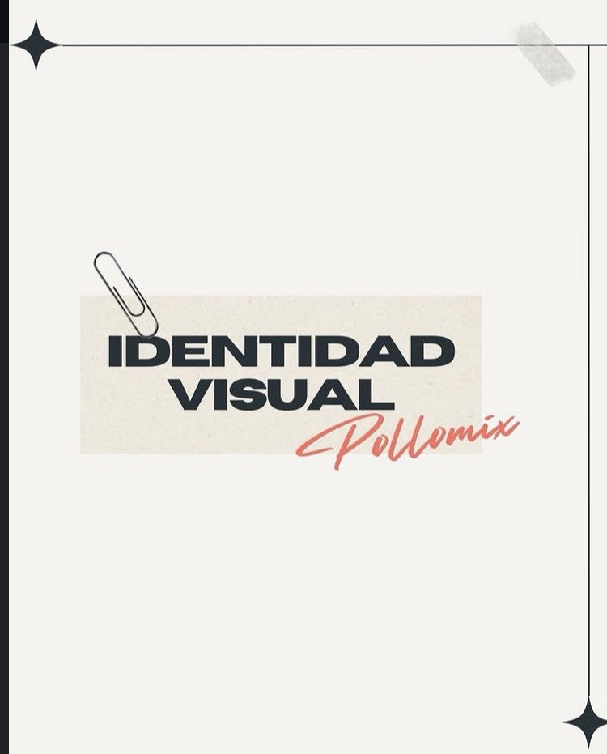
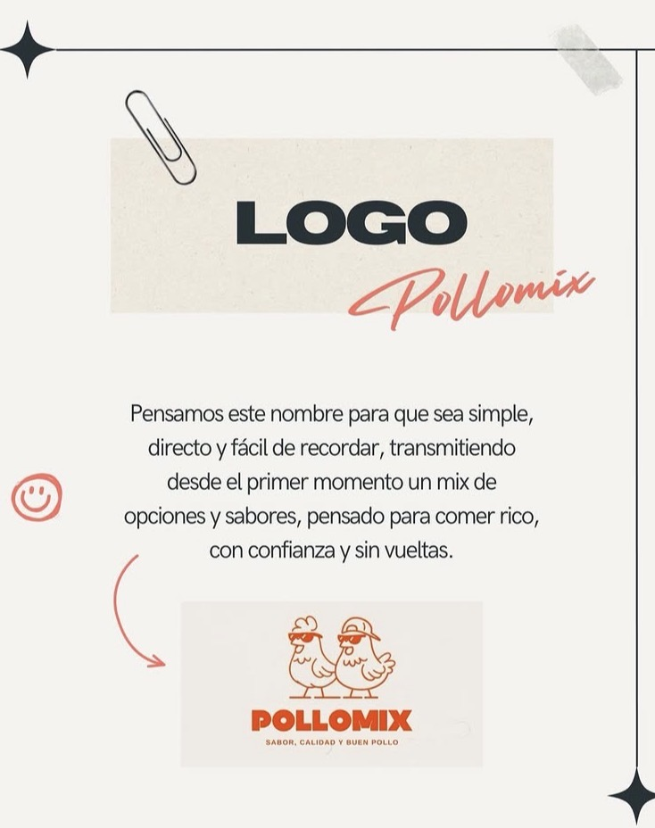
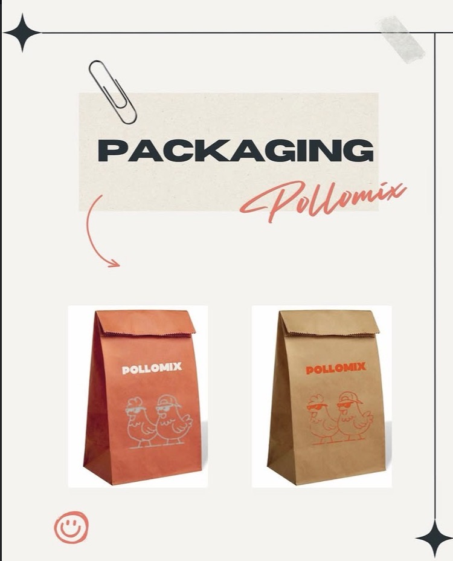
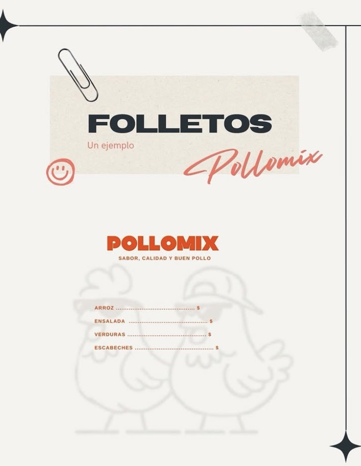
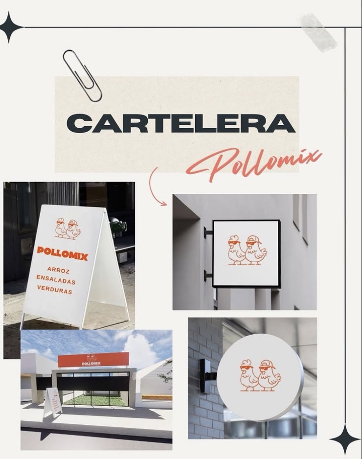

Identidad visual
Primero se define cómo se ve y se siente la marca: tipografías contundentes para mensajes directos, y una firma en script que aporta calidez y cercanía, sin perder fuerza en el mostrador.

Producciones
Trabajos donde el naming, la identidad y las piezas físicas se entienden como un solo sistema: claro para el cliente y coherente en cada punto de contacto.
Caso · Pollomix · marca de pollería
Primero se define cómo se ve y se siente la marca: tipografías contundentes para mensajes directos, y una firma en script que aporta calidez y cercanía, sin perder fuerza en el mostrador.

Un nombre simple y memorable, pensado para comunicar desde el primer momento un mix de opciones y sabores: comer rico, con confianza y sin vueltas. El logo cierra el círculo con personajes reconocibles y actitud.

La identidad se traduce a bolsas y envases que funcionan en el día a día del local: misma voz de color, mismo lenguaje gráfico, listos para reparto y mostrador.

Folletos y soportes de menú que ordenan la oferta (arroz, ensaladas, verduras, escabeches) manteniendo el tono jugador de la marca y la jerarquía clara de precios.

La marca sale a la calle: carteles, rótulos y frentes que repiten el mismo sistema —color, icono y mensaje— para que el local se lea de lejos y se reconozca al instante.
